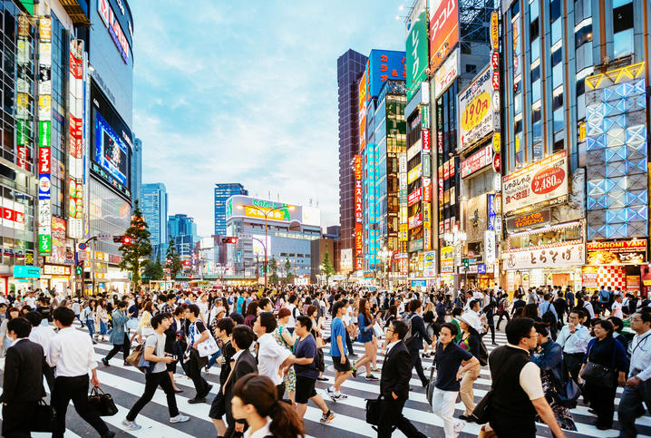
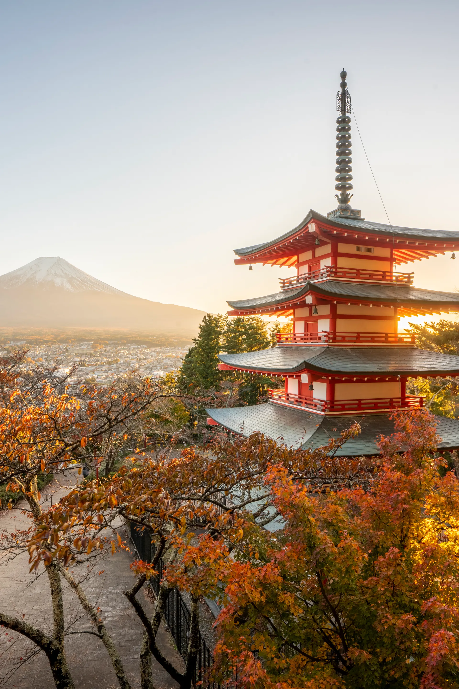
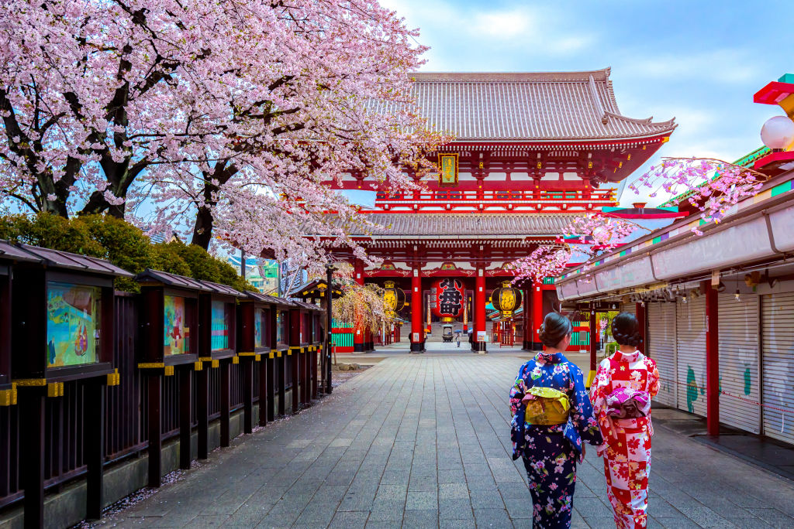
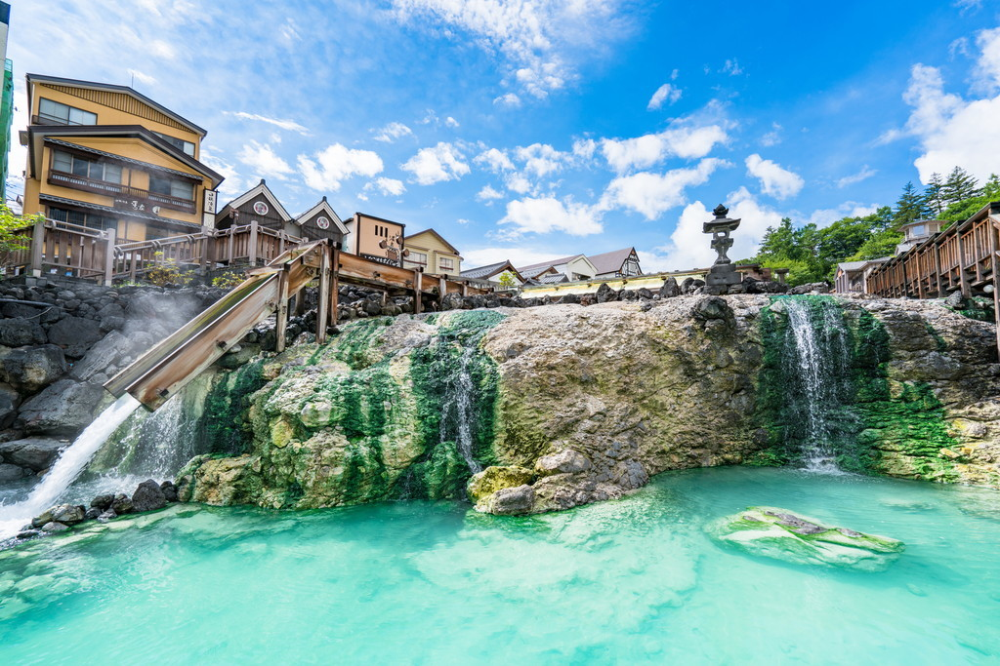

Okinawa, la prefectura más meridional de Japón, es un archipiélago caracterizado no solo por su clima subtropical, sino también por ser cuna del karate y contar con una historia propia, fruto de su pasado como reino independiente.
La región de Kanto, aparte de acoger a la metrópoli más grande del mundo, Tokio, también ofrece escapadas a la montaña y hermosas islas subtropicales
La región japonesa de Tohoku alberga paisajes rurales vírgenes y tesoros históricos, aventuras de verano al aire libre e infinitas cantidades de nieve en polvo en invierno
La región de Kanto, aparte de acoger a la metrópoli más grande del mundo, Tokio, también ofrece
escapadas a la montaña y hermosas islas subtropicales
La gran ciudad de Tokio enamora a los sentidos con su mezcla de bullicio moderno y tranquilidad tradicional.
Antes de dirigirte a Kioto o más allá, no te pierdas la oportunidad de descubrir Kanto y sus complejos termales,
gargantas de montaña en estado puro, playas prístinas, sitios declarados Patrimonio Mundial por la UNESCO y tesoros
culturales. A tan solo un paso de Tokio, encontrarás la diversa ciudad portuaria de Yokohama y la envolvente
naturaleza de Gunma, Saitama e Ibaraki. Las volcánicas islas Ogasawara son una buena escapada para disfrutar de un
ambiente subtropical con una fauna y flora endémicas y aguas transparentes. Las opciones culinarias de Kanto son tan
variadas como su paisaje, por lo que encontrarás una gran cantidad de restaurantes, con comida de cualquier parte
del mundo y para todos los bolsillos.
No te pierdas:
• Las brillantes luces y la sobreestimulación sensorial del centro de Tokio.
• Explorar tranquilamente la ciudad de Nikko, declarada Patrimonio Mundial.
• Saltar de isla en isla alrededor de la cadena volcánica que se extiende al sur de Tokio.
• Hacer puenting, snowboard, barranquismo y otras actividades al aire libre en Gunma, Saitama e Ibaraki.
Tokio, la ciudad de los rascacielos, ritmo trepidante y luces de neón, es tan futurista como histórica
Relájate en algunas de las aguas termales más veneradas de Japón
Turismo y aventuras en la naturaleza en la vecina prefectura de Tokio
Campos de brillantes flores y la agencia espacial de Japón